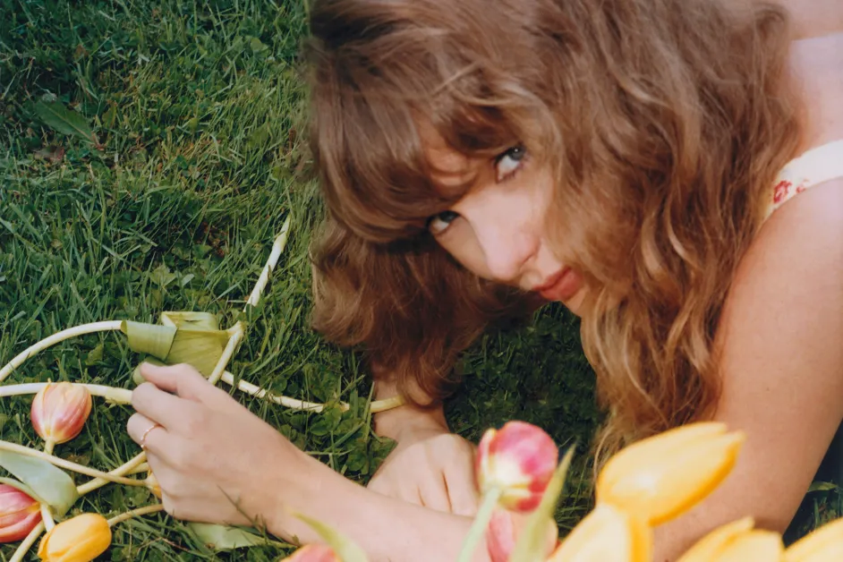

Taylor Swift vuelve al country en ‘I Knew It, I Knew You’, su nueva canción para ‘Toy Story 5’: Escúchala

Escrita pensando en Jessie, la querida vaquera de la saga, “I Knew It, I Knew You” se lanzó a la medianoche del viernes (5 de junio) y muestra a la superestrella del pop — tanto en lo musical como en la letra — retomando el género con el que comenzó su carrera. El tema formará parte de la banda sonora de la quinta entrega de la franquicia y se lanzará el 19 de junio, el mismo día del estreno de Toy Story 5 en cines.
Swift publicó un mensaje en X junto a un enlace a la nueva canción, comentando que “componer este tema se sintió como una incursión en un estilo musical diferente y como un regreso a casa al mismo tiempo. Crear algo para Jessie supuso un nuevo desafío, pero a la vez me resultó algo totalmente natural. Y haber crecido con @toystory desde los 5 años hasta hoy… es una aventura en la que pienso seguir, hasta el infinito y más allá”.
Protagonizada por las voces de Tom Hanks y Tim Allen — quienes retoman sus icónicos papeles de Woody y Buzz Lightyear, respectivamente — y el regreso de Joan Cusack para dar voz a Jessie, Toy Story 5 mostrará cómo los antiguos juguetes de Andy afrontan la situación de que una nueva tableta electrónica acapara la atención de su actual dueña, Bonnie.
Swift reveló su participación en Toy Story 5 apenas cinco días antes del lanzamiento del tema, y solo después de que aparecieran en diversos lugares del mundo unos misteriosos carteles con las siglas “TS”, diseñados con la tipografía característica de la franquicia cinematográfica. Asimismo, el sitio web de la artista ganadora de 14 premios Grammy cambió para mostrar una cuenta regresiva con la temática de Toy Story que conducía al anuncio realizado el lunes.
Andrew Stanton, director y guionista de Toy Story 5, dijo en un comunicado: “Es increíble lo significativo que ha sido que Taylor escribiera e interpretara esta canción”.
“Su conexión con Jessie y la forma inmediata en que comprendió por lo que estaba pasando el personaje resultaron innegables”, añadió. “La canción está profundamente ligada a Toy Story; tanto es así que, al escucharla por primera vez, se sintió de inmediato que siempre había pertenecido a la historia, como un familiar perdido hace mucho tiempo”.